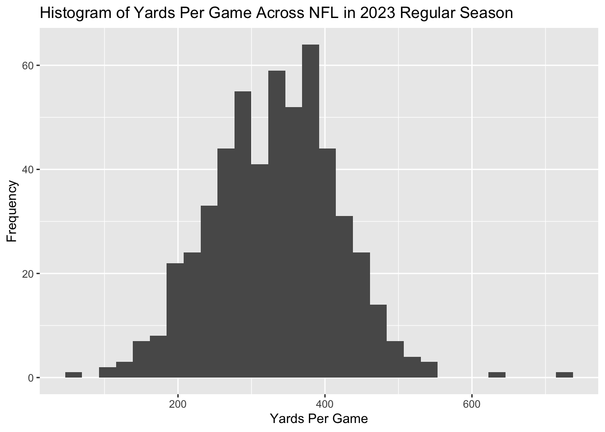

The NFL has two conferences, the NFC and the AFC. Within each conference there are four divisions; East, West, North, and South. Each division has four teams. The Carolina panthers play in the NFC South division. In this problem we will analyze data on NFL results. Use the nflfastR library to download play by play results for the 2023 season. Then do the following:
library(tidyverse)
── Attaching core tidyverse packages ──────────────────────── tidyverse 2.0.0 ──
✔ dplyr 1.1.4 ✔ readr 2.1.5
✔ forcats 1.0.1 ✔ stringr 1.5.2
✔ ggplot2 4.0.0 ✔ tibble 3.3.0
✔ lubridate 1.9.4 ✔ tidyr 1.3.1
✔ purrr 1.1.0
── Conflicts ────────────────────────────────────────── tidyverse_conflicts() ──
✖ dplyr::filter() masks stats::filter()
✖ dplyr::lag() masks stats::lag()
ℹ Use the conflicted package (<http://conflicted.r-lib.org/>) to force all conflicts to become errors
library(nflfastR)
• Calculate the total yards by team by game for each team over the course of the regular season. (Hint: group by game_date, posteam, and defteam and sum the field yards_gained. Note that under certain conditions the yards_gained or the posteam may be NA so adjust accordingly)
Warning: Returning more (or less) than 1 row per `summarise()` group was deprecated in
dplyr 1.1.0.
ℹ Please use `reframe()` instead.
ℹ When switching from `summarise()` to `reframe()`, remember that `reframe()`
always returns an ungrouped data frame and adjust accordingly.
quant_season
# A tibble: 544 × 8
game_id Min Avg Med Max StdDev posteam defteam
<chr> <dbl> <dbl> <dbl> <dbl> <dbl> <chr> <chr>
1 2023_01_ARI_WAS 210 229 229 248 26.9 ARI WAS
2 2023_01_ARI_WAS 210 229 229 248 26.9 WAS ARI
3 2023_01_BUF_NYJ 289 302. 302. 314 17.7 BUF NYJ
4 2023_01_BUF_NYJ 289 302. 302. 314 17.7 NYJ BUF
5 2023_01_CAR_ATL 221 251 251 281 42.4 ATL CAR
6 2023_01_CAR_ATL 221 251 251 281 42.4 CAR ATL
7 2023_01_CIN_CLE 142 247 247 352 148. CIN CLE
8 2023_01_CIN_CLE 142 247 247 352 148. CLE CIN
9 2023_01_DAL_NYG 171 218 218 265 66.5 DAL NYG
10 2023_01_DAL_NYG 171 218 218 265 66.5 NYG DAL
# ℹ 534 more rows
• Generate a histogram of the yards per game across the league and record that in the template.
regular_season_yards %>%ggplot(aes(x=total_yards_gained))+geom_histogram()+labs(title="Histogram of Yards Per Game Across NFL in 2023 Regular Season",x="Yards Per Game",y="Frequency")
`stat_bin()` using `bins = 30`. Pick better value `binwidth`.

• Load the file NFL_Divisions and join that to the Total Yards dataframe.
Rows: 32 Columns: 6
── Column specification ────────────────────────────────────────────────────────
Delimiter: ","
chr (6): abbr, city, team, conference, division, confdiv
ℹ Use `spec()` to retrieve the full column specification for this data.
ℹ Specify the column types or set `show_col_types = FALSE` to quiet this message.
NFL_Divisions
# A tibble: 32 × 6
abbr city team conference division confdiv
<chr> <chr> <chr> <chr> <chr> <chr>
1 NYJ New York Jets AFC East AFC East
2 BAL Baltimore Ravens AFC North AFC North
3 BUF Buffalo Bills AFC East AFC East
4 LA Los Angeles Rams NFC West NFC West
5 CAR Carolina Panthers NFC South NFC South
6 CLE Cleveland Browns AFC North AFC North
7 SEA Seattle Seahawks NFC West NFC West
8 DEN Denver Broncos AFC West AFC West
9 MIN Minnesota Vikings NFC North NFC North
10 GB Green Bay Packers NFC North NFC North
# ℹ 22 more rows
total_yard_teams <-full_join(regular_season_yards, NFL_Divisions, by =join_by("posteam"=="abbr"))total_yard_teams <-full_join(total_yard_teams, NFL_Divisions, by =join_by("defteam"=="abbr"))total_yard_teams
# A tibble: 544 × 15
game_id game_date posteam defteam total_yards_gained city.x team.x
<chr> <chr> <chr> <chr> <dbl> <chr> <chr>
1 2023_01_ARI_WAS 2023-09-10 ARI WAS 210 Arizona Cardi…
2 2023_01_ARI_WAS 2023-09-10 WAS ARI 248 Washing… Comma…
3 2023_01_BUF_NYJ 2023-09-11 BUF NYJ 314 Buffalo Bills
4 2023_01_BUF_NYJ 2023-09-11 NYJ BUF 289 New York Jets
5 2023_01_CAR_ATL 2023-09-10 ATL CAR 221 Atlanta Falco…
6 2023_01_CAR_ATL 2023-09-10 CAR ATL 281 Carolina Panth…
7 2023_01_CIN_CLE 2023-09-10 CIN CLE 142 Cincinn… Benga…
8 2023_01_CIN_CLE 2023-09-10 CLE CIN 352 Clevela… Browns
9 2023_01_DAL_NYG 2023-09-10 DAL NYG 265 Dallas Cowbo…
10 2023_01_DAL_NYG 2023-09-10 NYG DAL 171 New York Giants
# ℹ 534 more rows
# ℹ 8 more variables: conference.x <chr>, division.x <chr>, confdiv.x <chr>,
# city.y <chr>, team.y <chr>, conference.y <chr>, division.y <chr>,
# confdiv.y <chr>
• Calculate summary statistics (min, average, median, max, std dev) for the total yards per game by division. Record those statistics in the template.
• Generate a boxplot of total yards per game by division and record that in the template.
• Conduct an ANOVA test to evaluate the null hypothesis that there is no difference in the yard per game across divisions. Record the summary in the template.
• Filter the data to NFC South and calculate summary statistics (min, average, median, max, std dev) for Total Yards by team and report that in the template.
• Generate a box plot of total yards for teams in the NFC South and record that in the template.
• Conduct an ANOVA test to evaluate the null hypothesis that there is no difference in the yard per game across teams in the NFC South. Record the summary in the template.
• Conduct a pairwise Tuckey test to determine the differences for each pair of teams. Report the result in your template.
• Generate a column chart of total yards by game for the Panthers. Paste the graph into the template.
• What can you conclude from this analysis about the Carolina Panthers season?